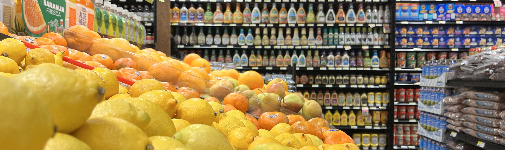
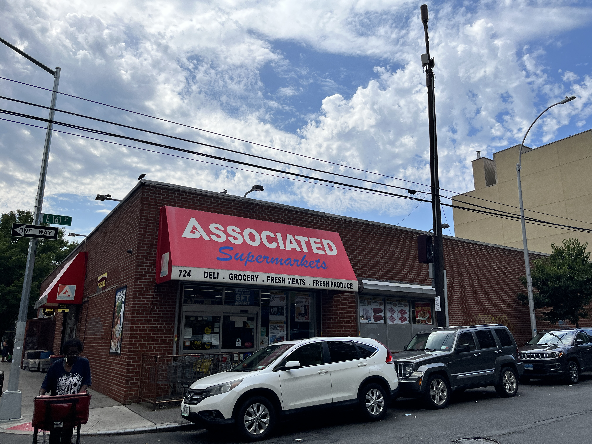

South Bronx supermarkets making big changes
By Zachary Zawila | April 7, 2024
Supermarkets across the South Bronx are changing. They are opening, closing, rebranding, and renovating. It’s shifting the composition of who owns and runs these supermarkets, and could eventually result in lower prices fueled by more competition.
On a Tuesday morning, cases of groceries were lined up along 161st Street. This is a familiar scene outside of the Associated Supermarket in Woodstock, as workers rolled produce and dry goods off of trucks and into the store’s receiving door.
That day, though, something new was in the delivery—cases of Urban Meadow seltzer, soon to replace the Avenue A-branded beverages on the shelves now.
The store is in the process of a rebrand to Food Universe, and over time, the Avenue A-branded groceries from Associated will be replaced with the Urban Meadow brand.

A New Supermarket
As that store prepares to transition into its new brand, a grocer in Mott Haven is making waves as the neighborhood’s first newly built supermarket in decades.
“It took two or three years from start to finish,” said Andy Torres, a manager at the new Shop Fair Supermarket on Saint Ann’s Avenue in Mott Haven.
A new supermarket is notable in a neighborhood considered to have high food insecurity and low food access, with just one supermarket for every 25 bodegas.
The new Shop Fair joins an older store a few blocks south at Brook Avenue and East 138th Street, which opened in 2020 in a former CTown Supermarket when that store’s owners defaulted on payments to a lender.
Neftali Medina, who owned that store, also owns a Met Foodmarket in Melrose and Pioneer Supermarkets in Williamsbridge and Highbridge. Other members of the Medina family own two Pioneer Supermarkets in Mott Haven and a store in Morris Park. The family also previously owned a supermarket on Cypress Avenue in Mott Haven.
José Medina’s longtime Pioneer Supermarket on Saint Ann’s Avenue—just two blocks south of the new Shop Fair—became a CTown in 2018, then returned to Pioneer in 2019.
“It was an administrative change,” said Carmen Medina, José’s sister, who manages the supermarket.
One of Melrose’s Fine Fare Supermarkets recently changed its name to SuperFresh. Another became Food Universe. In 2017, one of Longwood’s Fine Fares became a Food Fair Fresh Market.


The produce department of the new Mott Haven Shop Fair Supermarket.

Rebranding
So what’s in a name?
Most independent supermarkets in New York City are members of retailers’ cooperatives. These are groups of store owners who share brand names, marketing, and wholesaler contracts.
Pioneer and Met are brands within Long Island-based Associated Supermarket Group, which also represents Associated and Compare Foods Supermarkets, along with several independent grocers.
Meanwhile, Food Universe, SuperFresh, and Food Fair are all affiliated with New Jersey-based Key Food Stores Co-Operative.
Fine Fare and Shop Fair are affiliated with Retail Grocers Group, while CTown and Bravo are brands of Westchester County-based Krasdale Foods.
These cooperatives handle marketing and purchasing for the store owners. Each cooperative has a contract with a wholesaler, or has a wholesale division responsible for supplying the stores.
Store owners can choose to join or leave cooperatives, but typically, the cooperative keeps the rights to the name—meaning that if a store owner leaves a cooperative, they typically have to change the name.
Back in Woodstock, the new Food Universe is preparing to make some changes as it joins Key Food. It will happen incrementally, says Nadia Diaz, the store’s office manager. “For now, it’s going to look the same,” she said.
By the end of September, though, she said customers can expect to see new awnings with the Food Universe name and new digital signage, replacing paper sale flyers in the windows.
Key Food introduced the Food Universe brand in 2014 specifically for stores previously operating as Associated, Met, Pioneer, and Compare. Their wholesaler went bankrupt that year, and in the same year, the Associated Supermarket Group was formed.
In 2014, Key Food had 165 supermarkets. Today, the cooperative represents more than double that.
More new supermarkets are preparing to open and refresh across the South Bronx, too.
In Longwood, local chain Antillana SuperFood has signed a 20-year lease for around 5,000 square feet at 1000 Westchester Ave. Antillana is affiliated with the Associated Supermarket Group. An as-yet unnamed supermarket is preparing to open at Grand Concourse and 144th Street. Meanwhile, the Bravo Supermarket on Westchester Avenue in Longwood is undergoing renovations.
And at the Bronx Terminal Market, a bright yellow sign advertising “unbelievable prices” announces the coming of a new Lidl Food Market. The Germany-based chain is preparing to open in the mall, and as a limited-assortment discount store it is different from stores like Food Universe or Shop Fair.
The Bronx Terminal Market is already home to Target and BJ’s Wholesale, which both sell groceries. It also houses the borough’s largest supermarket, a Food Bazaar, which opened in 2020.

The Food Bazaar Supermarket in the Bronx Terminal Market is the borough's largest.

Can I Afford It?
The big question remains, though: Do these changes matter?
To Nevin Cohen, director of the Urban Food Policy Institute at the City University of New York’s School of Public Health, having a supermarket is not the deciding factor in a neighborhood’s health.
“Physical food access is not the cause of food insecurity and malnourishment,” he said.
“Just getting a new supermarket isn’t the only factor,” he said, adding, “Making sure it’s affordable is vital.”
Although Cohen declined to comment on specific chains of stores, he cited his own research from 2019, in which his team analyzed pricing at supermarkets across the five boroughs, all affiliated with the same grocery cooperative.
“The prices vary substantially based on the operator,” he said of his research, which indicated the median price for a selected basket of food was lower in the South Bronx than both the borough overall and the city overall.
On the other hand, he said any supermarket entering a neighborhood for the first time could bring down prices by offering more competition.
In fact, a 2020 study found that Lidl’s entry into the Long Island market pressured grocery prices down. Lately, though, Lidl has struggled as it expands in the United States, closing several locations and rethinking its strategy. Lidl did not respond to multiple requests for comment.
Cohen says he advocates for several solutions for food security, though, with participation in SNAP, access to community gardens, and even affordable housing contributing to food security.
“It’s moving upstream to solve this,” said Cohen.

A Bronx Western Beef Supermarket advertises its Power Wall of Savings.
Use the map below to view all the supermarkets in the South Bronx and across the borough.